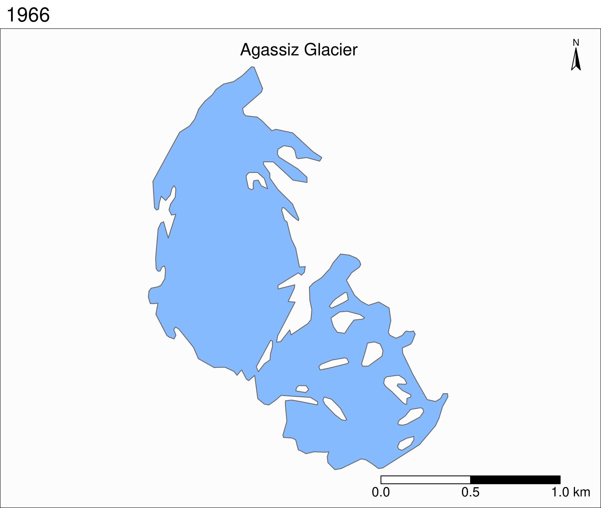

a <- 5
c <- c(2, 4, 1)
c * 5[1] 10 20 5sum(c)[1] 7Content from the workshop slides for easier browsing.
Created by academic statisticians Ross Ihaka and Robert Gentleman
The name comes from the language S which was a great influence as well as the first initial of the developers
Launched in 1993
A GNU Project since 1997
Free and open source
High-level and easy to learn
Large community
Very well documented
Unequalled number of statistics and modelling packages
Integrated package manager
Easy connection with fast compiled languages such as C and C++
Fields with heavy statistics, modelling, or Bayesian inference such as biology, linguistics, economics, or statistics
Data science
Inconsistent syntax full of quirks
Slow
Large memory usage
R being an interpreted language, it can be run non-interactively or interactively
If you write code in a text file (called a script), you can then execute it with:
Rscript my_script.RThe command to execute scripts is Rscript rather than R
By convention, R scripts take the extension .R
There are several ways to run R interactively:

Posit (formerly RStudio Inc.) developed a great and very popular IDE called RStudio
Here is its cheatsheet (click on it to download it):
The R documentation is excellent. Get info on any function with ? (e.g. ?sum)
a <- 5
c <- c(2, 4, 1)
c * 5[1] 10 20 5sum(c)[1] 7R really shines when it comes to statistics and modelling
We will spend the rest of the hour diving into very complex and heavy Bayesian statistics
In this demo, I will stick to fun topics
R comes with a number of datasets. You can get a list by running data()
The ggplot2 package provides additional ones, such as the mpg dataset:
library(ggplot2)
head(mpg, 4) # we are printing only the first 4 rows# A tibble: 4 × 11
manufacturer model displ year cyl trans drv cty hwy fl
<chr> <chr> <dbl> <int> <int> <chr> <chr> <int> <int> <chr>
1 audi a4 1.8 1999 4 auto(l5) f 18 29 p
2 audi a4 1.8 1999 4 manual(m5) f 21 29 p
3 audi a4 2 2008 4 manual(m6) f 20 31 p
4 audi a4 2 2008 4 auto(av) f 21 30 p
class
<chr>
1 compact
2 compact
3 compact
4 compactThe first component is the data:
ggplot(data = mpg)
The second component sets the way variables are mapped on the axes. This is done with the aes() (aesthetics) function:
ggplot(data = mpg, mapping = aes(x = displ, y = hwy))
Onto this canvas, we can add “geoms” (geometrical objects) representing the data.
To represent the data as a scatterplot, we use the geom_point() function:
ggplot(mpg, aes(x = displ, y = hwy)) +
geom_point()
We can colour-code the points in the scatterplot based on the drv variable, showing the lower fuel efficiency of 4WD vehicles:
ggplot(mpg, aes(x = displ, y = hwy)) +
geom_point(aes(color = drv))
Or we can colour-code them based on the class variable:
ggplot(mpg, aes(x = displ, y = hwy)) +
geom_point(aes(color = class))
Multiple “geoms” can be added on top of each other. For instance, we can add a smoothed conditional means function that aids at seeing patterns in the data with geom_smooth():
ggplot(mpg, aes(x = displ, y = hwy)) +
geom_point(aes(color = class)) +
geom_smooth()`geom_smooth()` using method = 'loess' and formula = 'y ~ x'
The default smoothing function uses the LOESS (locally estimated scatterplot smoothing) method. We can change the method by passing it as an argument to geom_smooth():
ggplot(mpg, aes(x = displ, y = hwy)) +
geom_point(aes(color = class)) +
geom_smooth(method = lm)`geom_smooth()` using formula = 'y ~ x'
We can apply the smoothing function to each class instead of the entire data. It creates a busy plot but shows that the downward trend remains true within each type of car:
ggplot(mpg, aes(x = displ, y = hwy, color = class)) +
geom_point(aes(color = class)) +
geom_smooth(method = lm)`geom_smooth()` using formula = 'y ~ x'
We can remove the standard errors and customize the line for our linear model:
ggplot(mpg, aes(x = displ, y = hwy)) +
geom_point(aes(color = class)) +
geom_smooth(
method = lm,
se = FALSE,
color = "#999999",
linewidth = 0.5
)`geom_smooth()` using formula = 'y ~ x'

Let’s try the Dark2 palette:
ggplot(mpg, aes(x = displ, y = hwy)) +
geom_point(aes(color = class)) +
scale_color_brewer(palette = "Dark2") +
geom_smooth(
method = lm,
se = FALSE,
color = "#999999",
linewidth = 0.5
)`geom_smooth()` using formula = 'y ~ x'
We can add title, axes labels, captions…
ggplot(mpg, aes(x = displ, y = hwy)) +
geom_point(aes(color = class)) +
scale_color_brewer(palette = "Dark2") +
geom_smooth(
method = lm,
se = FALSE,
color = "#999999",
linewidth = 0.5
) +
labs(
title = "Fuel consumption per engine size on highways",
x = "Engine size (L)",
y = "Fuel economy (mpg) on highways",
color = "Type of car",
caption = "EPA data from https://fueleconomy.gov/"
)`geom_smooth()` using formula = 'y ~ x'
Let’s change the theme to remove all this background noise:
ggplot(mpg, aes(x = displ, y = hwy)) +
geom_point(aes(color = class)) +
scale_color_brewer(palette = "Dark2") +
geom_smooth(
method = lm,
se = FALSE,
color = "#999999",
linewidth = 0.5
) +
labs(
title = "Fuel consumption per engine size on highways",
x = "Engine size (L)",
y = "Fuel economy (mpg) on highways",
color = "Type of car",
caption = "EPA data from https://fueleconomy.gov/"
) +
theme_classic()`geom_smooth()` using formula = 'y ~ x'
The theme() function allows to tweak the theme in any number of ways. For instance, what if we don’t like the default position of the title and we’d rather have it centered?
ggplot(mpg, aes(x = displ, y = hwy)) +
geom_point(aes(color = class)) +
scale_color_brewer(palette = "Dark2") +
geom_smooth(
method = lm,
se = FALSE,
color = "#999999",
linewidth = 0.5
) +
labs(
title = "Fuel consumption per engine size on highways",
x = "Engine size (L)",
y = "Fuel economy (mpg) on highways",
color = "Type of car",
caption = "EPA data from https://fueleconomy.gov/"
) +
theme_classic() +
theme(plot.title = element_text(hjust = 0.5))`geom_smooth()` using formula = 'y ~ x'
Many things can be changed thanks to the theme() function. For instance, we can move the legend to give more space to the actual graph:
ggplot(mpg, aes(x = displ, y = hwy)) +
geom_point(aes(color = class)) +
scale_color_brewer(palette = "Dark2") +
geom_smooth(
method = lm,
se = FALSE,
color = "#999999",
linewidth = 0.5
) +
labs(
title = "Fuel consumption per engine size on highways",
x = "Engine size (L)",
y = "Fuel economy (mpg) on highways",
color = "Type of car",
caption = "EPA data from https://fueleconomy.gov/"
) +
theme_classic() +
theme(plot.title = element_text(hjust = 0.5), legend.position = "bottom")`geom_smooth()` using formula = 'y ~ x'
Many packages build on ggplot2 and add functionality
One ggplot extension is the patchwork package which allows to combine multiple plots on the same frame
Let’s add a second plot next to our plot (we also make a few changes to the labels to improve the plots integration):
library(patchwork)
ggplot(mpg, aes(x = displ, y = hwy)) + # First plot
geom_point(aes(color = class)) +
scale_color_brewer(palette = "Dark2") +
geom_smooth(
method = lm,
se = FALSE,
color = "#999999",
linewidth = 0.5
) +
labs(
x = "Engine size (L)",
y = "Fuel economy (mpg) on highways",
color = "Type of car"
) +
theme_classic() +
theme(
plot.title = element_text(hjust = 0.5),
legend.position = c(0.7, 0.75), # Better legend position
legend.background = element_rect( # Add a frame to the legend
linewidth = 0.1,
linetype = "solid",
colour = "black"
)
) +
ggplot(mpg, aes(x = displ, y = hwy)) + # Second plot
geom_point(aes(color = drv)) +
scale_color_brewer(palette = "Dark2") +
labs(
x = "Engine size (L)",
y = element_blank(), # Remove redundant label
color = "Type of drive train",
caption = "EPA data from https://fueleconomy.gov/"
) +
theme_classic() +
theme(
plot.title = element_text(hjust = 0.5),
legend.position = c(0.7, 0.87),
legend.background = element_rect(
linewidth = 0.1,
linetype = "solid",
colour = "black"
)
)Warning: A numeric `legend.position` argument in `theme()` was deprecated in ggplot2
3.5.0.
ℹ Please use the `legend.position.inside` argument of `theme()` instead.`geom_smooth()` using formula = 'y ~ x'
HyperText Markup Language (HTML) is the standard markup language for websites: it encodes the information related to the formatting and structure of webpages. Additionally, some of the customization can be stored in Cascading Style Sheets (CSS) files.
HTML uses tags of the form:
<some_tag>Your content</some_tag>Some tags have attributes:
<some_tag attribute_name="attribute value">Your content</some_tag>Examples:
<h2>This is a heading of level 2</h2><b>This is bold</b><a href="https://some.url">This is the text for a link</a>We will use a website from the University of Tennessee containing a database of PhD theses from that university
Our goal is to scrape data from this site to produce a dataframe with the date, major, and advisor for each dissertation
We will only do this for the first page which contains the links to the 100 most recent theses. If you really wanted to gather all the data, you would have to do this for all pages
To do all this, we will use the package rvest, part of the tidyverse (a modern set of R packages). It is a package influenced by the popular Python package Beautiful Soup and it makes scraping websites with R really easy
Let’s load it:
library(rvest)As mentioned above, our site is the database of PhD dissertations from the University of Tennessee
Let’s create a character vector with the URL:
url <- "https://trace.tennessee.edu/utk_graddiss/index.html"First, we read in the html data from that page:
html <- read_html(url)Let’s have a look at the raw data:
html{html_document}
<html lang="en">
[1] <head>\n<meta http-equiv="Content-Type" content="text/html; charset=UTF-8 ...
[2] <body>\n<!-- FILE /srv/sequoia/main/data/trace.tennessee.edu/assets/heade ...dat <- html %>% html_elements(".article-listing a")
dat[1:6]{xml_nodeset (6)}
[1] <a href="https://trace.tennessee.edu/utk_graddiss/12328">Essays in Macroe ...
[2] <a href="https://trace.tennessee.edu/utk_graddiss/12671">UNDERSTANDING AN ...
[3] <a href="https://trace.tennessee.edu/utk_graddiss/12672">Soil Nitrous Oxi ...
[4] <a href="https://trace.tennessee.edu/utk_graddiss/12329">CHARACTERIZATION ...
[5] <a href="https://trace.tennessee.edu/utk_graddiss/12330">View from the To ...
[6] <a href="https://trace.tennessee.edu/utk_graddiss/12331">Exploration of V ...We now have a list of lists
Before running for loops, it is important to initialize empty loops. It is much more efficient than growing the result at each iteration
So let’s initialize an empty list that we call list_urls of the appropriate size:
list_urls <- vector("list", length(dat))Now we can run a loop to fill in our list:
for (i in seq_along(dat)) {
list_urls[[i]] <- dat[[i]] %>% html_attr("href")
}Let’s print again the first element of list_urls to make sure all looks good:
list_urls[[1]][1] "https://trace.tennessee.edu/utk_graddiss/12328"We now have a list of URLs (in the form of character vectors) as we wanted
We will now extract the data (date, major, and advisor) for all URLs in our list.
Again, before running a for loop, we need to allocate memory first by creating an empty container (here a list):
list_data <- vector("list", length(list_urls))
for (i in seq_along(list_urls)) {
html <- read_html(list_urls[[i]])
date <- html %>%
html_element("#publication_date p") %>%
html_text2()
major <- html %>%
html_element("#department p") %>%
html_text2()
advisor <- html %>%
html_element("#advisor1 p") %>%
html_text2()
Sys.sleep(0.1) # Add a little delay
list_data[[i]] <- cbind(date, major, advisor)
}We can turn this big list into a dataframe:
result <- do.call(rbind.data.frame, list_data)We can capitalize the headers:
names(result) <- c("Date", "Major", "Advisor")result is a long dataframe, so we will only print the first few elements:
head(result, 6) Date Major Advisor
1 5-2025 Economics Andrew, S, Hanson
2 8-2025 Civil Engineering Nicholas E. Wierschem
3 8-2025 Plant, Soil and Environmental Sciences Debasish Saha
4 5-2025 Biochemistry and Cellular and Molecular Biology Jae Park
5 5-2025 Higher Education Administration Pamella Angelle
6 5-2025 <NA> Andrea S. LearIf we wanted, we could save our data to a CSV file:
write.csv(result, "dissertations_data.csv", row.names = FALSE)I will skip the data preparation due to lack of time, but you can look at the code in this webinar or this workshop
Good options to create maps include ggplot2 (the package we already used for plotting) or tmap
tm_shape(states, bbox = nwa_bbox) +
tm_polygons(col = "#f2f2f2", lwd = 0.2) +
tm_shape(ak) +
tm_borders(col = "#3399ff") +
tm_fill(col = "#86baff") +
tm_shape(wes) +
tm_borders(col = "#3399ff") +
tm_fill(col = "#86baff") +
tm_layout(
title = "Glaciers of Western North America",
title.position = c("center", "top"),
title.size = 1.1,
bg.color = "#fcfcfc",
inner.margins = c(0.06, 0.01, 0.09, 0.01),
outer.margins = 0,
frame.lwd = 0.2
) +
tm_compass(
type = "arrow",
position = c("right", "top"),
size = 1.2,
text.size = 0.6
) +
tm_scale_bar(
breaks = c(0, 1000, 2000),
position = c("right", "BOTTOM")
)
tm_shape(ag) +
tm_polygons("year", palette = "Blues") +
tm_layout(
title = "Agassiz Glacier",
title.position = c("center", "top"),
legend.position = c("left", "bottom"),
legend.title.color = "#fcfcfc",
legend.text.size = 1,
bg.color = "#fcfcfc",
inner.margins = c(0.07, 0.03, 0.07, 0.03),
outer.margins = 0
) +
tm_compass(
type = "arrow",
position = c("right", "top"),
text.size = 0.7
) +
tm_scale_bar(
breaks = c(0, 0.5, 1),
position = c("right", "BOTTOM"),
text.size = 1
)
{.r} tmap_animation(tm_shape(ag) + tm_polygons(col = "#86baff") + tm_layout( title = "Agassiz Glacier", title.position = c("center", "top"), legend.position = c("left", "bottom"), legend.title.color = "#fcfcfc", legend.text.size = 1, bg.color = "#fcfcfc", inner.margins = c(0.08, 0, 0.08, 0), outer.margins = 0, panel.label.bg.color = "#fcfcfc" ) + tm_compass( type = "arrow", position = c("right", "top"), text.size = 0.7 ) + tm_scale_bar( breaks = c(0, 0.5, 1), position = c("right", "BOTTOM"), text.size = 1 ) + tm_facets( along = "year", free.coords = F )filename = "ag.gif", dpi = 300, inner.margins = c(0.08, 0, 0.08, 0), delay = 100

Each region under the Alliance offers regular courses and workshops in R (and many other topics)
In the west, Alex Razoumov and myself offer regular free workshops, courses, and webinars for researchers in Canadian academic institutions